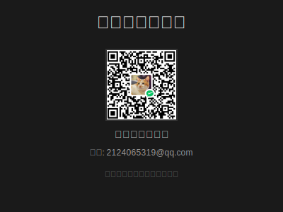

terminal
控制面板
minimize
crop_square
close
输入命令
激活键盘模拟器协议。 启动序列ALPHA-7。 启动前延迟：3秒。 抖动参数设置为5%。 执行程序。 传输结束。
控制界面
play_arrow
启动
stop
停止
delete_sweep
清空输入
系统指标
运行状态:
活跃
最后事件:
00:15:32 / 已发送
平均延迟:
12ms
配置
速度 (字符/秒)
help
实际输出汉字速度通常低于设置值，因为汉字输入需要更多处理时间
延迟 (秒)
抖动 (%)
发送回车键
自动切换输入法
IDE模式
置于顶层
完成提醒
支持
